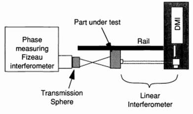

Marc Lata
MEGR 8191
12/10/2019
Final Exam
Assume you are an optics manufacturer. Figure 1 is a drawing
of a mirror for use in a low power infra-red imaging system.
Figure 1.1: Mirror Drawing
(a) Review the
drawing. Does it provide a sufficient specification for manufacturing?
No!
(b) If not, list missing specifications or
questions for the designer in the left-hand column of Table 1 below and give
reasonable specifications/answers in the right-hand column.
|
Specification/clarification required |
Response |
|
1) What is h? I assume that it is the distance from the center of the mirror, but it seems like non-standard convention compared to the more traditional r! 2) Center thickness of the mirror is not specified 3) 3rd angle projection not proved Dont know what shape the base of mirror should be |
1) Assume that h is equivalent to r and not somehow referring to the height, which would not make much sense 2) Assume drawing is to scale, which when measured gives a center thickness of ~15 mm 3) Assume it is a circular base that is rotationally symmetric |
(c) Briefly
describe the part, noting at least 3 key characteristics
This part is a concave parabolic mirror (k=-1) with a focal length of 25 mm (F = R/2) and a diameter of D = 95 mm (Clear Aperture or Effective Diameter = 85 mm). It is to be fabricated from 6061 Aluminum and coated with Nickel. The back and sides of the mirror are to be given a ground finish, and the surface of the mirror is to be polished to a rms roughness (Rq) of no more than 10 m in a spatial wavelength range of .002-1 mm.
(d) Consider
any answers you gave in the right-hand column of part (b) to be included in the
specification for this part. What processes (or combination of processes) could
be used to make this part? Give at least two different process chains. (Extra
credit for more than 2 practical approaches)
Two potential process chain are:
1.
Process Chain 1: Single
point diamond turning w/ Nickel Plating
a.
Single point
diamond turn the specified mirror surface in aluminum alloy
b.
Electroless Nickel
coat mirror
This process chain uses single
point diamond turning, which generates specular surfaces with sub-nanometer RMS
surface roughness [1, 2], which is well below the desired 10 m. This means no additional polishing of the surface
should be necessary. Diamond turning is known to have issues with mid-spatial
frequencies, however for IR applications it is typically not a problem.
2.
CNC Milling w/
Nickel Plating & Polishing
a.
CNC mill the
aluminum mirror
b.
Electroless
Nickel coat mirror
c.
Polish Nickel to
desired surface finish using polishing method capable of producing parabolic
surface
i.
Hand polish by
master optician
ii.
Magnetorheological
finishing
iii.
CNC polishing
This process chain utilizes a CNC mill to generate the parabolic aluminum core, which is then coated and polished to the desired surface finish. This process chain, unlike the SPDT process chain, requires additional polishing, since it is unlikely that the CNC mill will produce a surface finish that meets our specifications. Aluminum cant be easily polished, so it must be nickel plated before polished. Then, since we are polishing to a parabola, it must be polished using a process that allows for producing non-spherical surfaces. Possible processes include Magnetorheological finishing, or even hand polishing by a master optician.
Which is better (best) in your
opinion?
Probably the diamond turning.
Why (state any assumptions)?
Since it should produce a
surface that already meets the surface specification and does not require any additional
polishing, which can be difficult to do for non-spherical surfaces.
Does your preferred process allow any changes in the
specifications which may reduce cost or delivery time?
Single Point Diamond Turning allows for the mirror surface
to go completely to the edge, which would remove the need for the beveled edges
and avoid having to measure the flatness of the bevels.
(e) How will you demonstrate
conformance to surface form specification? What equipment do you need? Sketch
set-ups if required. What if any adjustments are needed to align the part for
measurement?
To measure the accuracy of the parabolic surface, we can use a null test, which involves using a Fizeau interferometer to send a collimated beam of light into the mirror and then reflecting the beam back from the focal point of the mirror, which should yield a null result. Various null arrangements are shown in Figure 1.2:
Figure 1.2: Parabolic Mirror Null Test [3]
If the parabola is well formed, you should be able to generate a null result on the interferogram. Aberrations from the desired form can be detected as various fringe patterns, some of which are shown here:
Figure 1.3: Spherical aberration at (a) paraxial focus (b) best focus and (c) w/tilt [3]
We would need an additional mirror on a displacement table mounted with tip/tilt adjustments. We would also need a mount for the mirror that includes tip/tilt adjustments so that it can be aligned to the interferometer.
Briefly describe the additional
information required to assess the uncertainty in your final measurement and
what if any measurements are needed to obtain that information.
We would need to have a way of measuring the positions of the mirror and/or focal point, which would allow us to accurately determine the focal point of the mirror. This can be done many ways, but one method I have seen used is to use a displacement measuring interferometer [4].
Other sources of uncertainty for interferometric measurements include:
Environmental
o Changes in temperature can cause changes to the ambient index, leading to inconsistent phase.
o Monitor rooms temperature over long period to ensure stability of rooms temperature
Turbulence
o Changes in the air pressure along the beam path leads to changes in index that can cause changes in phase along the beam path that arent due to the part.
o Monitor the
Laser system
o Instability of the laser wavelength can lead to errors in the interpretation of the data
o Must measure the lasers stability, perhaps by running it for a long period of time and monitoring the wavelength produced
Vibrations
o Ambient vibrations can cause noise in interferometric measurements
o Ensure table is well isolated and perform long-term monitoring of table to understand vibrational enviroment
What if any additional measurements are required to
demonstrate conformance to specifications?
Additional measurements needed would include:
Surface texture of the back and sides will also
need to be measured to make sure they conform to the specified roughness of Rq
<= 1mm. This can be done with a profilometer or interferometer.
Parallelism of the back surface to the front
surface must also be measured.
Center of the lens must also be determined to be
inside of the specified tolerance
Outer diameter and inner diameter (if beveled)
must be measured
Bevel flatness must be measured (if
beveled)
A pair of flats are set-up in
front of a Fizeau interferometer (Figure 2.1)
Figure 2.1:
The RF can be rotated about an axis defined by a normal to
the center of the TF. Data are taken at 5 positions (q=0, 72, 144, 216 and 288
degrees) and shown in Figure 2.2 with piston and tilt removed. Orthonormal Zernike
coefficients (nm) describing the 5 sets of measurement data are given in Table
2.1. Estimate the rms of the rotationally varying component of the surface
error of TF1 and of the RF, briefly describing each step in your analysis and
the logic for it.
Figure 2.2
|
a(0,0) |
a(1,-1) |
a(1,1) |
a(2,-2) |
a(2,0) |
s(2,2) |
a(3,-3) |
a(3,-1) |
a(3,1) |
a(3,3) |
|
|
0 |
-2 |
-9 |
9 |
6 |
4 |
-2 |
2 |
-3 |
3 |
-2 |
|
72 |
-1 |
-2 |
-18 |
10 |
4 |
11 |
1 |
-7 |
1 |
6 |
|
144 |
10 |
31 |
1 |
-1 |
4 |
3 |
6 |
-7 |
-4 |
0 |
|
216 |
-12 |
-12 |
-13 |
13 |
4 |
3 |
-1 |
-2 |
-5 |
2 |
|
288 |
-3 |
-27 |
11 |
2 |
4 |
11 |
6 |
0 |
-1 |
5 |
Table 2.1
An additional transmission
flat (TF2) is available, so two additional measurements were made: TF2 vs RF
and TF2 vs TF1. Z (2,0) is the only
significant rotationally invariant term in all these measurements. The
orthonormal Zernike coefficients (nm) for the 3 measurements are given in Table
2.2. Calculate the a(2,0) coefficient for each of the
3 flats.
|
a
(2,0) nm |
|
|
TF1+RF |
4 |
|
TF2+RF |
-6 |
|
TF2+TF1 |
8 |
Table 2.2
I would like to find the rotationally varying surface figure error for the reference and the test flats from the provided Zernike coefficients. In order to do that, I can utilize a technique for separating the rotationally variant and invariant components of the measured wavefront that relies on averaging the measured wavefront for N azimuthal measurements each 360/N apart [5]. It can be shown that the rotationally varying component of orders not equal to integer multiples of N will necessarily sum to zero when the N wavefronts are averaged. Assuming any wavefront can be A of a circular cross-section can be represented as a linear combination of polynomial terms:
Summing this wavefront over 5 evenly spaced angles gives:
For k = 0, i.e. rotationally invariant terms, this simply becomes 5A. or 5 times the wavefront. For rotationally invariant terms, however, the Sine and Cosine terms will each independently sum to 0, as is illustrated in Table 2.3.
|
Cos(kφ) |
|||||
|
φ |
k=1 |
k=2 |
k=3 |
k=4 |
k=5 |
|
0 |
1.0000 |
1.0000 |
1.0000 |
1.0000 |
1.0000 |
|
72 |
-0.8090 |
0.3090 |
0.3090 |
-0.8090 |
1.0000 |
|
144 |
0.3090 |
-0.8090 |
-0.8090 |
0.3090 |
1.0000 |
|
216 |
0.3090 |
-0.8090 |
-0.8090 |
0.3090 |
1.0000 |
|
288 |
-0.8090 |
0.3090 |
0.3090 |
-0.8090 |
1.0000 |
|
Σ |
0 |
0 |
0 |
0 |
5 |
|
Sin(kφ) |
|||||
|
φ |
k=1 |
k=2 |
k=3 |
k=4 |
k=5 |
|
0 |
0.0000 |
0.0000 |
0.0000 |
0.0000 |
0.0000 |
|
72 |
0.5878 |
-0.9511 |
0.9511 |
-0.5878 |
0.0000 |
|
144 |
-0.9511 |
-0.5878 |
0.5878 |
0.9511 |
0.0000 |
|
216 |
0.9511 |
0.5878 |
-0.5878 |
-0.9511 |
0.0000 |
|
288 |
-0.5878 |
0.9511 |
-0.9511 |
0.5878 |
0.0000 |
|
Σ |
0 |
0 |
0 |
0 |
0 |
Table 2.3
For the measurements I am provided, they contain information about the test plate wavefront and the reference plate wavefront:
Each of which contains a rationally variant and a rotationally invariant component:
Averaging the measured wavefront for 5 evenly spaced positions of the test surface will necessarily eliminate the rotationally varying component of the test surface:
Averaging these measurements gives:
|
|
a(0,0) |
a(1,-1) |
a(1,1) |
a(2,-2) |
a(2,0) |
s(2,2) |
a(3,-3) |
a(3,-1) |
a(3,1) |
a(3,3) |
|
Average |
-1.6 |
-3.8 |
-2 |
6 |
4 |
5.2 |
2.8 |
-3.8 |
-1.2 |
2.2 |
The only rotationally invariant terms were provided in our measurement are a(0,0) and a(2,0). The varying terms should only be associated with the reference surfaces error. Since these are orthonormal Zernike coefficients, their root-sum-square will give us the RMS surface error associated with these terms. The RSS of the variant terms of this average measurement (ignoring tilt) gives:
I can now subtract this average from any one of the measurements to determine the rotationally variant value of the Test plates surface. Ill do this for all 5 measurements then average the RSS of each:
|
|
a(0,0) |
a(1,-1) |
a(1,1) |
a(2,-2) |
a(2,0) |
s(2,2) |
a(3,-3) |
a(3,-1) |
a(3,1) |
a(3,3) |
RSS |
|
Measured Wavefronts - Rotationally
Averaged Wavefront |
-0.4 |
-5.2 |
11 |
0 |
0 |
-7.2 |
-0.8 |
0.8 |
4.2 |
-4.2 |
9.40 |
|
0.6 |
1.8 |
-16 |
4 |
0 |
5.8 |
-1.8 |
-3.2 |
2.2 |
3.8 |
9.08 |
|
|
11.6 |
34.8 |
3 |
-7 |
0 |
-2.2 |
3.2 |
-3.2 |
-2.8 |
-2.2 |
9.33 |
|
|
-10.4 |
-8.2 |
-11 |
7 |
0 |
-2.2 |
-3.8 |
1.8 |
-3.8 |
-0.2 |
9.27 |
|
|
-1.4 |
-23.2 |
13 |
-4 |
0 |
5.8 |
3.2 |
3.8 |
0.2 |
2.8 |
9.07 |
|
|
Avg |
9.23 |
So the average RMS of the rotationally varying component of the Test plates surface is:
For the second part of this problem, where I am given the a(2,0) value for 3 different measurements using combinations of 3 different plates, I can determi9ne the a(2,0) value for each of these surfaces by treating it as a system of 3 equations with 3 unknowns:
(a) Briefly
describe at least 2 ways to measure radius of curvature for a spherical surface
on a concave mirror?
One way is the Cats Eye/Confocal technique, which utilizes a Fizeau interferometer with a reference sphere. In the Cats Eye Position, the test surface is at the focal point of the reference sphere, which reflects an identical wavefront returning a null result on the interferometer. The confocal position occurs when the test surfaces radius exactly matches the radius of the reference wavefront, which, as is illustrated in Figure 3.1: Cat's Eye Confocal Radius Measurement [6], lies a distance R from the cats eye position. Measuring this distance can be done with any suitable distance measuring method. A common method is to use a displacement measuring interferometer, as shown in Figure 3.1: Cat's Eye Confocal Radius Measurement [6].

Figure 3.1: Cat's Eye Confocal Radius Measurement [6]
Another technique is to use a spherometer, which is a special tool used to measure the radius of a sphere.
Figure 3.2: Spherometer [7]
The spherometer works by contacting the sphere at three
points a fixed distance from the center, then measuring the height of the
sphere at the center of these three contact points. This measures the sag of
the sphere, which can then be used to calculate the radius of the sphere using
the distance between the legs of the spherometer and the center.
(b) Briefly indicate what are the limiting uncertainties for
each method?
Since the cats eye confocal measurement relies on precise measurement of the displacement between the cats eye and confocal positions, one of the main sources of uncertainties is the displacement measurement. The sources of uncertainty for this measurement when using a displacement measuring interferometer were outlined by Schmitz et. Al. in one of our weekly papers. In this paper, they determined that the dead-path error was the most significant source of uncertainty in the displacement measurement, which arises from a improper nulling of the DMI interferometer and thus a difference in the DMI measurement and the actual distance [4]. Zygo has published rankings of the error sources for different test and reference radii of curvature, shown in Figure 3.3:
Figure 3.3: Cat's Eye Confocal Ranked Uncertainties [6]
This indicates that the limiting uncertainty is a function of the test and reference radii, with Null and Abbe errors being the most common limiting uncertainties, where Abbe error arises from non-colinear of the test and reference surface.
For the spherometer, the limiting uncertainty is likely the
uncertainty in the height measurement. The spherometer must be calibrated on a
flat surface, which will inherently include some uncertainty, and there will
also be uncertainty in the reading of the measurement (especially if it is not
electronic).
(c) What compensator(s)
can be built into the optomechanical system to relax radius tolerances for
imaging systems operating over a narrow spectral bandwidth?
The most direct compensator is to allow for the ability to move the position of the focus of the lens. Introducing a 1% error into the radius of a 300 mm lens will cause the following wavefront error 300 mm from the vertex:
Figure 3.4: Wavefront error due to small radius error
If we allow for the system to be respaced, however, the error can be essentially eliminated, as is shown here when the system is respaced to 301.57 mm:
Figure 3.5: Correction of wavefront error due to radius error by respacing system
(d) For broad spectral imaging systems, what
are the limitations on the compensators can be built into the optomechanical system
to relax radius tolerances?
Respacing the system may not be effective for a broadband imaging system due to the material used to construct the lens likely having some dispersion, meaning the index of refraction will depend on the wavelength of light. This means that the lens will have different focal points for different wavelengths:
Figure 3.6: Chromatic aberration of lens and dispersion chart
The focal points of the lens for different wavelengths are likely to change at different rates as the radius changes. And if the system was achromatic at the specified radius value, error in the radius will likely reintroduce the chromatic aberration, which cannot be corrected with respacing alone.
1. Diamond Turning Capabilities. 2009; Available from: http://www.iiviinfrared.com/pdfs/II-VI_dTurn2009-01a.pdf.
2. Horst, R.t., et al., Directly polished lightweight aluminum mirror. International Conference on Space Optics 2008. Vol. 10566. 2017: SPIE.
3. Optical shop testing. 2007.
4. Schmitz, T.L., et al., Displacement Uncertainty in Interferometric Radius Measurements. CIRP Annals, 2002. 51(1): p. 451-454.
5. Evans, C.J. and R.N. Kestner, Test optics error removal. Applied Optics, 1996. 35(7): p. 1015-1021.
6. Selberg, L.A., Radius measurement by interferometry. Optical Engineering, 1992. 31(9): p. 1961-1966, 6.
7. Darling, D. Spherometer. Available from: https://www.daviddarling.info/encyclopedia/S/spherometer.html.